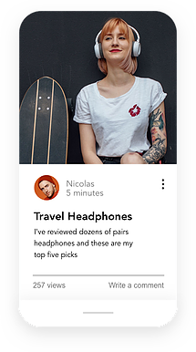
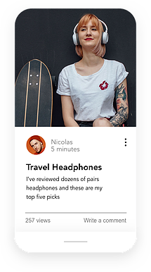

Create a Website
You're Proud Of
Discover the plafform that fives you the freedo to create, design, manage and develop your web presence exactly the way you want.
 

The Freedom to Create
the Websites You Want
Design and build your own high-quality websites.
Whether you’re promoting your
business, showcasing
your work, opening
your store or starting a blog—you
can do it all with the Wix website builder.
Build Your Unique
Online Presence
To create your own Website, follow these steps:
Customize your site
Pick a template and customize
anything,
or answer a few
questions and get a free
website
designed just for you.
Add advanced features
Start your own blog, add an
online store and accept bookings
online. You can always
add more
features as you grow.
Edit your mobile view
Check out the mobile-
optimized version of your site.
Switch to the Mobile Editor
to
personalize it even more.
Optimize for search engines
Answer a few questions about
your website, location and
keywords and get a
personalized
SEO
plan to get found online.

Wix Editor
Total Design Freedom
Start from scratch or choose from over 500
designer-made templates to make your own
website.
With
the world’s most innovative drag
and drop website builder, you can customize or
change
anything.
Make your site come
to life with
video backgrounds, scroll effects and animation.
With the Wix Editor, you can
create
your own
professional
website that looks stunning.
Wix ADI
Get Online Fast
Answer a few simple questions and Wix ADI
(Artificial Design Intelligence) will
instantly
build
a
personalized website
just for you,
complete with custom text and images.
Choose your style, change the layout
and
add
any
features you need
for your business, like
an online store or booking system. When
you’re ready, go live in
a
click.
Corvid by Wix
Open Dev Platform
Build professional web applications with
serverless computing and hassle-free coding.
Manage all your content from
integrated
databases, add your own code in the built-in IDE or work in your own
environment, and
connect
to 100s of
APIs. Plus, you get total design
freedom from the Wix Editor and optimized
business
applications.
Manage and Grow
Your Business Online
The Wix website builder makes it possible for anyone to create a website and manage their business—all in one place. Effortlessly capture leads, build customer relationships and accept payments right from your website.
Get Started →
Why the Wix Website
Builder Is the Best Choice for You
Corvid by Wix
Open Dev Platform
You can create a free and professional website all on your own. With Wix, you can start with a
stunning template and
customize it, or get a personalized website made just for you. When you choose Wix, you don’t just
get a drag and drop
website builder. You get the whole package. Free reliable web hosting, top security, the best SEO
and a dedicated
support team to help you along the way.
Over 160 million people worldwide choose Wix to create a free website. And you can do it, too.
How to Create a Free Website
Follow these 6 simple steps to create a website today.
- Sign up for a free website builder. Choose what kind of website you want to create.
- Customize a template or get a website made for you. Choose your starting point.
- Drag and drop 100s of design features. Add text, galleries, videos, vector art and more.
- Get ready for business. Add an online store, booking system, members area and blog.
- Publish your website and go live. Start building your professional online presence.
- Drive traffic to your site. Use advanced SEO tools and integrated marketing solutions.
Stunning Templates
Start with free HTML website templates and bring your vision to life.
Health & Wellness
Psychologist
Events
One Day Festival
Design
Architect Company
Business
Home Organizer
Portfolio & CV
Art Director
Video
Music Video Director
FAQ
-
Is it easy to build a website?
Yes. Wix offers a few different ways to create your own free website, so you can choose the creation process that works best for you. Need to get online fast? Answer a few simple questions and Wix ADI (Artificial Design Intelligence) will build a professional website for you in under 10 minutes. If you want 100% design freedom, start from scratch and drag and drop the website design features you need in the Wix Editor.
-
Can I create a website without knowing how to code?
Absolutely. Wix is user-friendly and makes it possible to build a professional website without knowing how to code. In the Wix Editor, you can drag and drop any feature you want and customize it to match the look and feel of your site. Of course, if you do know how to code, you can add advanced functionality to your site with Corvid.
-
How do I make my site mobile friendly?
Your Wix website automatically comes with a mobile-optimized version that looks great on smaller screens. The Wix Mobile Editor makes it easy to customize your mobile site even more.
-
How do I create a free website with a custom domain?
You can create a free website with Wix that comes with a Wix domain. To instantly look more professional online, get a custom domain name. It adds credibility to your brand and helps visitors find you online. You can start building your brand by using your domain in a custom email address (info@mystunningwebsite.com), your social channels, email marketing campaigns and more.
-
Should I use a website builder or hire a web developer?
The free Wix website builder is intuitive to use. Looking for a specific web service? Explore the Wix Marketplace to find a certified freelancer or agency at a price that fits your budget.
-
How do I build and host my site for free?
When you create a free website with Wix, you get reliable, scalable and free web hosting. All your web content will be stored on secure servers located around the world. So no matter where your visitors come from, your site will load fast.
-
Can I use a website builder to create a landing page?
Absolutely! You can create any kind of website with Wix. Explore beautiful HTML landing page templates to Get Started today.
-
How do I get my website found on Google?
Wix makes it simple to get your website found on Google. With Wix SEO Wiz, answer a few questions about your site, location and keywords and get a personalized SEO plan to get found online.
This website was designed with Wix